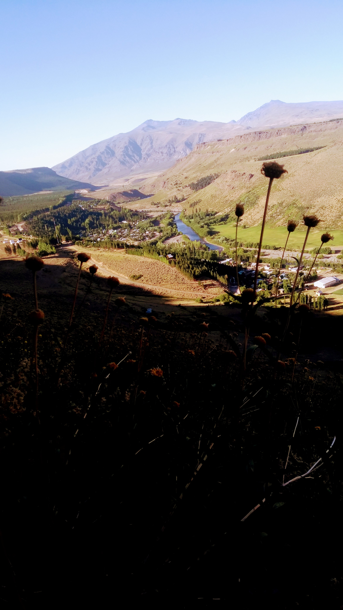

Si bien me falta conocer más provincias de la Argentina, hasta el momento, puedo decir quue Neuquen es mi favorita.
Sobretodo de lo que es el norte neuquino, con sus volvanes, cordillera, aridez, oehuenes, y demas
Es por eso que en esta seccion la voy a dedicar a poner fotos de ella, para que más genet se enamore (?)
Copahue, desde el camino al ito. Febrero 2019
El salto del Agrio. Enero 2022
Manzano Amargo, en el norte neuquino, visto desde los chenques. Enero 2021